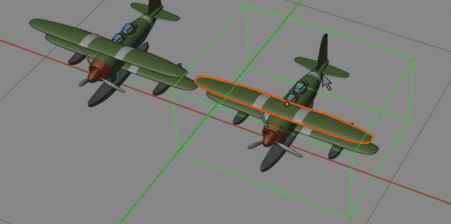

Usage¶
To create new group select objects you want to join, and press Ctrl+X -> 'Create Group'. You will notice selected objects are now merged into one group, and cannot be selected individually. To edit group components you have to open it with 'Edit Group' button.
After pressing it you will see green box around edited group (color depend on your settings in addon preferences). Any modifications performed on object that are member of group, will be saved after you press 'Close Group' button.
You can add or remove objects from group, while you have group opened, using Add/Remove from group buttons. Note: If you remove all objects from group, while editing it, group will be deleted after pressing 'Close Group' button.
Create Group¶
Joins selected objects together into collection instance
Joins selected objects in one, and creating CollectionInstance from them. After using this function you can press F9 to change group name or change group pivot location (median point or 3d cursor location).
Edit Group¶
You can perform modifications to CollectionInstance, add/remove objects from it, after pressing this button. You will notice green box around objects that are members of group. Also in bottom left corner, there will be info with name of currently edited group name.
NOTE: Color of edited group can be customized in addon preferences -> View Tab. You can set it to be completely transparent if you want.
Add/Remove from Group¶
Add/Remove from Group – while you are in edit group mode you can press those buttons to add/remove selected objects from/to group. Changes will be saved after Close Group.
Close Group¶
After editing group merges objects back together
Saves changes performed while you were in edit group mode, merges objects back together.
Dissolve¶
Split Group of objects into separate components
Very similar to build in blender operator “make duplicates real (shift+ctrl+A)”. It splits Grouped object into separate, individual mesh objects.
- MaxDepth - parameter describes how many subgroups, from selected objects will be split. For example setting it to 1 - will split only main group, but not sub-groups.
Initialize groups¶
Initialize groups – when you copy CollectionInstance from one blend file to another (using ctrl+c, ctrl+v), you may noticed pasted Group is messy - all objects, that the CollectionInstance is made of, are visible. To cleanup scene after pasting new Group into scene, select all the objects and press 'Initialize groups'. I will hide all unnecessary objects leaving only relevant Collection Instances.
Set group origin¶
Change origin of selected group instance, while maintaining position of other instances
Changes pivot point of selected CollectionInstance, while preserving position all other instances. This works only on active object.
- 3d cursor
- Objects Center
- Bounding Box Bottom
- Bounding box center
Delete Group¶
Removes group and all its instances permanently from scene
Deletes group with subgroups and objects that this group is made of permanently from blender file. After using this operation you won't have access to deleted Group. In contrast using 'delete' key on keyboard, deletes group from scene, but you can still access and add back group from:
- Shift+A → 'Collection instances” menu.
Pick Group¶
Quickly open nested sub collection with Pick Group
If you have made group from sub groups, which have sub-groups, opening those nested sub-sub-groups may be time consuming. Pick group will let you open group which is directly under cursor, no matter how much nested it is inside parent groups.
CleanUP¶
Cleanup unused groups (groups that are currently not being linked to scene) - with content. Useful when there are lots of CollectionInstances under “Shift+A”→CollectionInstances, and you don't need them, if they are not on scene. This command will delete groups only if they are not used on scene.
Flip selection¶
clones and mirrors object around chosen axis. After using this function you can press F9, to change axis of mirroring, pivot point (scene center, or 3d cursor), or disable duplication. This button was developed, because creating mirrored group instance is buggy, so I created 'Flip selection' button.
Make unique¶

Makes selected Group separate instance. Use it when you want to customize look of one Group, without affecting look of other instances that are already on scene.
- maxDepth - Maximum depth for which unique groups will be created. 0-inifinite depth, default=1
- De-instance meshes - do you want new collection instance objects to be instanced or copies
- De-instance materials - do you want new collection instance materials to be instanced or copies
Note: When you use Shift+D hotkey, to copy group - i will be un-instanced from original group automatically.